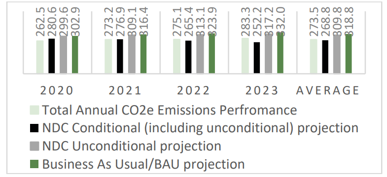
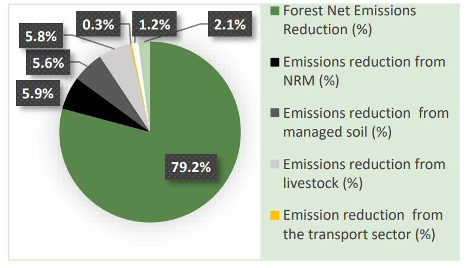
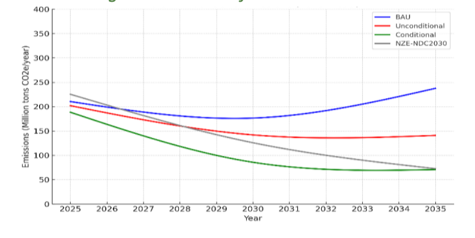
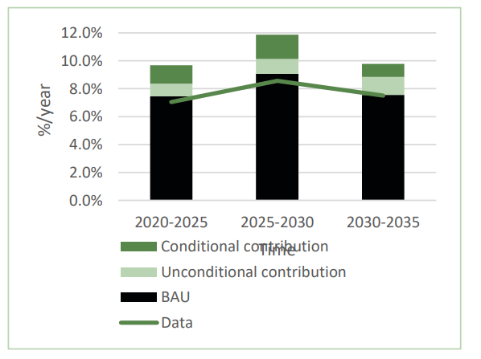
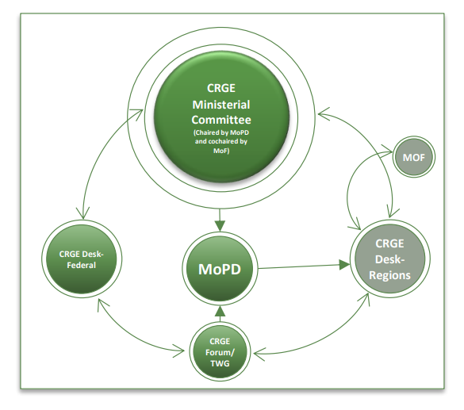
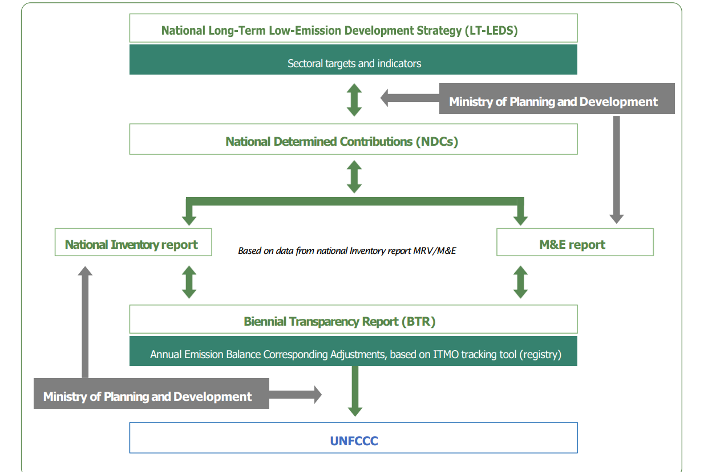

THE FEDERAL DEMOCRATIC REPUBLIC OF ETHIOPIA
September 2025
The Federal Democratic Republic of Ethiopia recognizes the intensifying impact of climate change on our people, ecosystems, and economy. In response to these escalating challenges, Ethiopia reaffirms its steadfast commitment to the Paris Agreement and the long-term temperature goal of holding the global average temperature well below 2°C above pre-industrial levels, while pursuing efforts to limit the increase to 1.5°C.
Building on this commitment, Ethiopia's Nationally Determined Contribution (NDC 3.0) commits to a 70.3% reduction in greenhouse gas emissions by 2035 relative to the revised business-as-usual pathway by 2035, signaling Ethiopia's renewed determination to fight against climate change, strengthen resilience, and align its national development with climate actions.
Ethiopia's NDC 3.0 draws on the stocktake of its Updated NDC implementation, lessons learnt, and institutional experience, and aligns with the Long-Term Low-Emissions Development Strategy (LT-LEDS, which targets net-zero emissions by 2050) and the Ten-Year Development Plan (10YDP). Together, these frameworks embed climate objectives within the broader development pathway, ensuring that Ethiopia's ambition is grounded in national priorities, evolving capabilities, and the best available science.
Ethiopia's NDC 3.0 further clarifies the distinction between unconditional actions to be delivered with domestic effort and conditional actions contingent on international support, reflecting lessons learnt since 2021. It fortifies public-finance commitments, improves measurement, reporting, and verification (MRV) systems, and harmonizes with sectoral and cross-sectoral strategies to ensure coherence and accountability. Ethiopia's commitment to transparency, equity, and inclusive growth aligns with the design of the NDC, which aims to advance poverty reduction, social well-being, and resilience through climate action.
In this context, Ethiopia calls on the international community, including development partners, the private sector and civil society, to support and scale the initiatives outlined in NDC 3.0, recognizing that achieving the 1.5°C pathway requires shared understanding and responsibility, tangible progress, fair burden-sharing and collective will. Ethiopia remains fully committed to a climate-resilient and prosperous future for all, and looks forward to continued collaboration.
H.E. Fitsum Assefa, PhD
Minister, FDRE Ministry of Planning and Development
Ethiopia is now advancing to the next ambitious plan: NDC 3.0, building on the commendable achievements of its Updated NDC implementation (2021–2025).
These achievements were driven by the homegrown Green Legacy Initiative, encompassing massive restoration and afforestation programs, accelerated renewable energy production, and electrification of the transport sector. Ethiopia also established the Green Legacy and Degraded Landscapes Restoration Special Fund, financed through annual federal budget allocations and supported by a mandatory contribution of 0.5 to 1.0% of Ethiopia's total domestic financial resources.
These milestones unfolded against a backdrop of acute climate risks and complex socioeconomic pressures. Recurrent droughts, erratic rainfall, and rising temperatures intensified vulnerabilities across climate-sensitive systems, particularly rain-fed agriculture and pastoral livelihoods. Floods and climate-related shocks imposed additional strain on infrastructure and social services, while global disruptions related to COVID-19 and geopolitical tensions raised prices, disrupted supply chains, constrained fiscal space, and complicated project delivery. These intersecting challenges underscored the centrality of climate resilience to Ethiopia's development pathway and informed the framing of the NDC 3.0 (2025–2035).
Despite all these complex challenges, Ethiopia advanced implementation of its updated NDC across mitigation, adaptation, and enabling measures. Economy-wide emissions levels between 2020–2025 tracked well below BAU and the unconditional pathway, though slightly above the conditional path requiring stronger international support.
The LUCF delivered most reductions via the Green Legacy Initiative and improved forest management; investments in renewable energy and clean transport accelerated: a predominantly renewable power mix and an EV push (including a ban on new ICE vehicle imports) reshaped fleets and charging. Adaptation scaled through climate-smart agriculture, small-scale irrigation, resilient urban services, and early-warning systems. Progress was underpinned by domestic and external finance, but international climate finance and private capital remained modest, underscoring the need for concessional, blended finance and stronger MRV.
Building on these achievements and lessons, but also recognizing persistent climate and socio-economic challenges, Ethiopia's NDC 3.0 preparation is therefore timely and practical. First, it enables Ethiopia to consolidate gains from 2021–2025 and align near-term actions with its net-zero 2050 vision under the Long-Term Low-Emissions Development Strategy (LT-LEDS) and the Ten-Year Development Plan (10YDP). Second, consistent with the Paris Agreement's progression and highest-possible ambition, it provides a vehicle to raise ambition where feasible and sharpen sector priorities. Third, it addresses what is learnt from putting interventions into investable and implementable action: the importance of clearly marking climate budgets, improving data systems, better coordinating institutions, and having investment-ready project pipelines that can attract large and programmatic financing.
The preparation of NDC 3.0 followed a structured, evidence-based process: extensive document review and data collection, the stocktaking of the updated NDC implementation, broader stakeholder consultations, and updated modelling with the Ethiopian Green Economy Model, calibrated to the latest inputs.
Emissions were estimated per the IPCC 2006 Guidelines; sector pathways were vetted with sector ministries; and adaptation priorities were drawn from several sector-based vulnerability assessments, the National Adaptation Plan of Ethiopia (NAP-ETH), and the stocktaking of the Updated NDC implementation.
Financing needs for NDC 3.0 are quantified and estimated for unconditional and conditional interventions. The remainder of this document sets out the NDC 3.0 for 2025–2035: the preparation process and departures, updated GHG projections under BAU, unconditional, and conditional scenarios and targets; the adaptation interventions across sectors (including equity and social inclusion, and loss and damage); and the means of implementation; finance, capacity building, technology transfer and carbon markets.
It also discusses fairness and ambition, economic implications, the explicit conditional and unconditional contributions, and the governance framework that integrates climate policy with national development planning. Together, these sections provide a coherent pathway to scale mitigation and adaptation, strengthen resilience, and align Ethiopia's development trajectory with the objectives of the Paris Agreement.
Ethiopia's actual GHG emissions averaged at 273.5 MtCO₂e during 2020–2023, which is well below the BAU projection of 318.8 MtCO₂e. This positive trend is consistent with the successful implementation of Ethiopia's mitigation policies, which are already contributing to a slower emissions growth. Moreover, actual emissions remained well below the unconditional NDC pathway, which averaged 309.8 MtCO₂e, showing that Ethiopia is making strong progress using its own domestic resources. However, actual emissions slightly exceeded the conditional NDC pathway average of 268.8 MtCO₂e, suggesting that international support will be critical for closing this gap and achieving deeper reductions.

The forestry sector delivered the most significant emissions reductions. By 2023, Ethiopia's forest cover reached 23.6%, moving closer to the national goal of 30% by 2030. Massive afforestation and reforestation campaigns under the GLI have transformed the landscape; carbon sequestration increased from 34.6 MtCO₂e in 2020 to nearly 50 MtCO₂e in 2024 as tree planting and sustainable forest management created a growing carbon sink. On average, about 10.96 MtCO₂e per year of emissions were avoided by preventing deforestation and forest degradation during 2020–2024. As a result, the forest sector contributed about 79.1% of total emission reductions achieved, followed by agriculture (17.3%) and other sectors (energy, industry, waste, and transport collectively 3.6%) (Figure 2).
The energy sector also saw notable progress through Ethiopia's renewable energy expansion. The country continued to generate over 95% of its electricity from renewable sources (primarily hydropower, with growing solar and wind), enabling cleaner economic growth. The country's installed electric capacity increased from 4,413 MW in 2020 to 7,910 MW in 2025, about 45% of the 16,058 MW target set by 2030.
A bold new Electric Vehicle (EV) initiative was launched, positioning Ethiopia as a leader in Africa's green mobility, and Ethiopia became the first African Country to ban imports of new internal combustion engine cars. By 2024, over 100,000 EVs were on the roads and about 200 charging stations were operational nationwide. A strategy is in place to reach 500,000 EVs and 2,176 charging stations by 2033, which will substantially cut urban air pollution and transport emissions.
The agriculture sector contributed to mitigation through climate-smart practices that also enhanced yields. Overall, these efforts put Ethiopia on a lower emissions trajectory than anticipated, demonstrating the country's commitment to green growth and sustainable development.

Ethiopia undertook strategic approaches to enhance its resilience to climate-related shocks between 2020 and 2025, with a particular emphasis on safeguarding vulnerable livelihoods and reinforcing critical infrastructure. This comprehensive approach involved targeted investment efforts across key sectors such as agriculture, water management, energy, transport, and urban development. As a result, the country achieved tangible progress in improving adaptive capacity, reducing climate vulnerability, and promoting sustainable development.
In the agriculture sector, climate-smart agriculture practices significantly expanded during the updated NDC implementation period. The productivity of major food crops rose from 25 quintals per hectare in 2018 to 32 quintals per hectare by 2025. Significant advancements in agricultural productivity and resilience were recorded through the widespread adoption of drought-tolerant crop varieties and improved farming practices.
By 2025, over 17.9 million hectares of rain-fed cropland were cultivated using climate-smart agriculture, an increase from 7.94 million hectares in 2018.
Besides, livestock productivity showed improvement. The average daily milk yield per cow rose from 6.15 liters in 2018 to 7.94 liters in 2025. This improvement was attributed to the introduction of animal breeds and the optimization of feeding regimes, including balanced rations and improved forage quality.
In addition, veterinary service coverage is expanded to 93% nationwide by 2025, ensuring timely disease prevention and health management across livestock populations.
Small-scale irrigation farming experienced a substantial boost in output, with total production increasing from 8.0 million quintals to 27.5 million quintals. Collectively, these developments have enhanced the resilience of food production systems, enabling them to withstand recurrent droughts, floods, and climatic shocks.
Ethiopia implemented Participatory Forest Management (PFM) as a key strategy to involve local communities in the sustainable management of over 2 million hectares of forests. These efforts have helped reduce deforestation and forest degradation while offering livelihood benefits to participating communities.
Ethiopia has also implemented several other forests and natural resource related adaptation actions with mitigation co-benefits. These include efforts to protect forest ecosystems from fire, pests, and disease, while enhancing their role in supporting livelihoods and the national economy.
For instance, between 2019 and 2025, 2.24 million green jobs were created, and 174.6 million USD was earned from the export of forest and non-timber forest products.
A total of 2.98 million hectares of natural forest were conserved under sustainable forest management. These measures help to build ecosystem resilience and provide sustainable income sources for communities vulnerable to climate change.
Ethiopia has been implementing the Urban Corridor Development initiative as a key transformative urban initiative aimed at modernizing the cities through improved infrastructure, enhanced green spaces, and better connectivity.
Investments in affordable housing, neighborhood renewal, and essential urban services have improved living conditions in urban areas. For instance, between 2018 and 2024, the proportion of urban residents residing in slums decreased from 74% to 54%. This reduction is attributed to comprehensive urban development programs that enhanced housing standards and introduced climate-resilient infrastructure, such as improved drainage systems, reliable water supply, and improved sanitation facilities in underserved communities. By 2024, the expansion of climate-adaptive infrastructure was evident in the extension of all-weather roads and bridges designed to resist extreme climate events from 144,000 kilometers in 2018 to 169,450 kilometers.
Moreover, the number of climate-resilient waste disposal sites rose from 6 in 2018 to 31 by 2025, thereby reducing both pollution and flood vulnerability. These measures have begun to strengthen the resilience of cities, urban settlements, offering enhanced protection to vulnerable communities against climate-induced hazards such as floods, waterborne diseases, and infrastructure failure.
By 2025, over 580,000 off-grid solar systems were installed countrywide, enhancing access to clean and sustainable energy in remote areas of the country to address underserved communities. This large-scale expansion enabled electricity access for approximately 1.5 million rural residents, primarily through solar home systems designed to operate independently of the national grid.
The expansion of off-grid renewable energy infrastructure catalyzed the creation of an estimated 190,000 green jobs, with employment opportunities concentrated in solar technology supply chains, installation and maintenance services, and agriculture-related value addition.
In parallel, Ethiopia invested in the modernization and expansion of its hydrometeorological services, aiming to improve climate risk forecasting and early warning systems.
Access to improved water sources has increased from 30% in 2000 to 60% by 2023, yet rural–urban disparities remain to be addressed. The water supply sector has made positive progress, providing drinking water to 76 million people, with close to 56 million rural and 20 million urban by 2023. Access has been expanded to 17 woredas in vulnerable regions. Schools and hospitals now have 40% clean drinking water coverage in 2025, reflecting a rising focus on institutional access. These successes demonstrate the country's dedication to water accessibility, although universal coverage remains difficult, especially in vulnerable and drought-affected areas.
In the transport sector, the integration of climate resilience into the design and maintenance of roads and railways has become a cornerstone of sustainable infrastructure development. Recognizing the increasing frequency and severity of climate-related shocks, the government has adopted adaptive road infrastructure and environmental strategies to safeguard critical transport assets. These approaches protected vital supply routes from disruption during extreme weather events. To complement these approaches, the country has implemented reforestation along major highways to stabilize surrounding soil and reduce erosion, minimize the risk of landslides in hilly and mountainous regions, and enhance biodiversity and carbon sequestration.
In Ethiopia, the health sector has taken proactive steps to address the growing threat of climate-sensitive diseases by launching Community Health Extension Programs (CHEPs). These programs are designed to deliver essential health services at the grassroots level, particularly in regions most vulnerable to climate-related hazards. The CHEPs have focused on mitigating the impact of diseases that are exacerbated by climate extreme events, including malaria, cholera, and other waterborne diseases.
Ethiopia has made notable progress in modernizing its meteorological stations. The share of modern meteorological stations has reached 50.4%, reflecting a substantial upgrade in climate data collection capabilities across the country. This modernization has directly contributed to a notable improvement in the accuracy of weather forecasts, which now stands at 87.8%.
User satisfaction with meteorological services has risen to 79%, indicating growing public trust and engagement with climate-related information. This progress is especially impactful for Ethiopia's agricultural sector, which remains highly vulnerable to climate change and variability.
The advanced systems also enable farming and pastoral communities to anticipate droughts and floods, which affect an estimated 1.5 million people annually and can cause damage exceeding USD 200 million to infrastructure and cropland.
In addition, the accessibility and utilization of the information systems strengthen the capacity for farmers, pastoralists, and disaster management agencies to make informed decisions, reducing risks to livelihoods and food security.
Mobilizing sufficient resources for climate action remains a critical challenge for implementation. Between 2020 and 2025, Ethiopia has predominantly relied on domestic financing, with international support remaining limited. A considerable portion of domestic finance was channeled into climate-related initiatives, notably in agriculture, rural development, renewable energy, afforestation, and irrigation.
The Ethiopian federal government's commitment to climate action is quantitatively reflected in its budget allocations. For the fiscal years 2023/24 and 2024/25, the government has allocated 0.8% and 0.6% of its annual total budget1 respectively, specifically for mitigation and adaptation efforts. While the percentage illustrates a commitment to addressing climate change, it represents only a fraction of the overall domestic financing landscape (Table 1).
| Description | 2023/24 (in Million ETB) | 2024/25 (in Million ETB) | ||
|---|---|---|---|---|
| Mitigation | Adaptation | Mitigation | Adaptation | |
| Agricultural and Rural Development | 220.1 | 921.1 | 170.2 | 1,740.5 |
| Ethiopian Forestry Development | 191.3 | 15.8 | 150.8 | 635.7 |
| Environmental Protection Authority | 28.8 | – | – | 220.6 |
| Water Resources and Energy | 67.7 | 2,641.2 | 98.1 | 4,367.8 |
| Transport and Communication | 34.1 | 32.2 | 64.5 | 20.9 |
| Urban Development and Construction | – | 436.3 | – | – |
| Social/Health – Cross cutting | – | 1,672.7 | – | 3,799.4 |
| Total | 542.0 | 5,719.4 | 483.5 | 10,785.0 |
Source: Ministry of Finance (2025)
Importantly, the federal government's allocations do not encompass the contributions from regional governments and local communities. Initiatives such as the Green Legacy have seen substantial community participation and financial input, which collectively account for over half of Ethiopia's domestic climate funding. This grassroots involvement is crucial, as it not only enhances financial resources but also fosters local ownership and sustainability of climate initiatives.
Moreover, from 2021–2025, an average of USD 1.7 billion investments were committed annually for mitigation and adaptation actions from external sources. However, this amount represents only 7% of the country's estimated climate finance needs, which stand at USD 25.3 billion per year. This funding constitutes less than 2% of Ethiopia's GDP during the same period, highlighting a significant financing gap.
Ethiopia attracted more climate finance for adaptation projects (56%) compared to mitigation projects (38%). This trend contrasts with the global average, where mitigation efforts typically receive a far larger share (90%). The heavy reliance on grants and concessional financing for mitigation projects reflects both actual and perceived high investment risks. The attracted climate finance in Ethiopia is predominantly characterized by international public financiers, accounting for 92% of the total funding. In contrast, private finance from both domestic and international investors remains at just 8%. Furthermore, a significant portion of public climate financing is delivered through grants, which make up 70% of the total, emphasizing a reliance on non-repayable funding sources.
In terms of sectoral distribution, agriculture, forestry, and other land use (AFOLU) received 29% (average USD 486 million) of climate finance, which is disproportionately low compared to its contribution to emissions (83%). Ethiopia's potential to accessing and utilizing climate finance has been severely constrained by a confluence of global and regional crises since 2021.
The lingering impacts of COVID-19 and the global tensions inflated project costs, disrupted supply chains, and reduced public fiscal space. Simultaneously, a historic drought escalated humanitarian needs, diverting resources away from vital climate investments precisely when they were most critical.
While Ethiopia is strengthening its system for tracking climate flows and tagging climate-related expenditures in the national budget, significant gaps remain. Incomplete data, delayed reporting, and a lack of disaggregate details on sub-national spending obscure a clear view of total climate finance. Strengthening these Monitoring, Reporting, and Verification (MRV) systems is essential not just for transparency, but to accelerate project preparation and attract targeted investment.
Ethiopia's NDC 3.0 preparation process has passed through several stages, including data collection, comprehensive document review, stakeholder consultations, stocktaking of the implementation of the updated NDC (2021), model development, and validations. In addition, GHG emissions have been estimated using the most recent IPCC 2006 guideline.
The GHG Enhancement process also employed Ethiopia's Green Economy Model (GEM) approach with the latest available information and embedded the revised macro and sector-level mitigation and adaptation intervention options, and targets vetted with the relevant line ministries and stakeholders for GHG emission projections pathway up to 2035. This is in line with Ethiopia's Ten-Year Development Plan and its Long-Term Low Emission and Climate Resilient Strategy. Adaptation intervention targets are also based on several sector-based vulnerability assessments, the National Adaptation Plan of Ethiopia (NAP-ETH), and the stocktaking of the Updated NDC implementation. Moreover, the financing needs are estimated for mitigation and adaptation interventions and further disaggregated into unconditional and conditional financing needs. In addition, comprehensive assessments of institutional capacity needs, gender and social inclusion, and stocktaking exercises were conducted to inform the preparation of NDC 3.0.
Ethiopia's NDC 3.0 has been formulated to carry forward the basis, objectives, and strategic directions of the 10YDP, LT-LEDS, and the updated NDC (2020–2030), and build on the findings of the stocktaking of the updated NDC implementations, which include challenges faced and lessons drawn from the implementation. Nevertheless, the NDC 3.0 has its own distinguishing features, including the following.
Ethiopia has established 'The Green Legacy and Degraded Landscapes Restoration Special Fund' by Proclamation No. 1361/2024 to scale up best practices of the Green Legacy Initiative to restore degraded landscapes and ecosystem services and manage and conserve forests and biodiversity resources, and thereby, enhance climate resilience and economic development.
The Special Fund is primarily financed through annual federal budget allocations, with a mandatory contribution of 0.5 percent to 1.0 percent of Ethiopia's total domestic financial resources. The Fund will mobilize additional resources from development partners, civil society organizations, and private sector entities.
Ethiopia's NDC 3.0 marks a decisive step forward in aligning national climate ambition with the country's 10YDP and Long-Term Low Emission and Climate Resilient Development Strategy. Building on a decade of sustained leadership, Ethiopia continues to stand out as a global example in the design and implementation of its NDCs, demonstrating how climate action and development priorities can be effectively integrated.
With strong political commitment, a structured planning process, inter-ministerial coordination, and inclusive stakeholder engagement, Ethiopia has institutionalized a model of participatory planning process that ensures climate commitments are integral to its development priorities and ambitions. This approach is rooted in a solid foundation laid by the Climate Resilient Green Economy Strategy, the Ten-Year Development Plan, and the Updated NDC, all of which have embedded climate resilience and low-carbon pathways into national development planning.
NDC 3.0 continues this trajectory by explicitly reinforcing policy coherence and alignment with Ethiopia's long-term Low Emission Strategy, underscoring its dual commitment to achieving its development aspirations while transitioning toward a low-emission, climate-resilient future.
Under NDC 3.0, Ethiopia places renewed emphasis on equity and social inclusion as central pillars of its climate action agenda. Building on its commitment to leave no one behind, the NDC 3.0 integrates gender considerations, the needs of children and youth, and other cross-cutting dimensions to ensure that low-emission, climate-resilient development pathways are inclusive and just.
Ethiopia has taken a key step by designing its carbon market strategy and explicitly integrating it with NDC 3.0, positioning the country's potential to mobilize climate finance, incentivize low-emission development, and strengthen the implementation of NDC 3.0, and its Long-Term Low Emission and Climate Resilient Development Strategy.
Loss and Damage is also integrated into the NDC 3.0 and represented as shock to economic and physical systems that translate into tangible socio-economic losses. These impacts, encompassing extreme weather events, and gradual temperature shifts, directly affect infrastructure, productive capital, and key service sectors.
Therefore, loss and damage under NDC 3.0 captures both the immediate destruction of assets and the longer-term economic consequences of climate-related hazards, allowing for an assessment of vulnerability, exposure, and resilience.
Ethiopia's NDC 3.0 also advances transparency and clarity by disaggregating unconditional and conditional commitments for GHG emissions reduction targets and financing needs from domestic resources and international support for the NDC 3.0 implementation, which enables a clearer definition of the government's unconditional commitments and external support.
As Ethiopia embarks on NDC 3.0, the revitalization of its climate governance framework is both timely and strategic, reflecting the provisions of Proclamation 1263/2021 on the powers and duties of executive organs and the emerging policy imperative to integrate climate policy with development planning.
Strengthening institutional coordination under this new governance and coordination framework enhances Ethiopia's capacity to achieve resilient, low-emission growth by ensuring the effective implementation of the NDC 3.0 and sustaining flagship national initiatives such as the Green Legacy. In line with the new CRGE governance architecture, the Ministry of Planning and Development (MoPD) is mandated to coordinate sectoral government organs to implement and manage a climate-resilient green development strategy within the national development planning framework. Revitalizing and reorienting the CRGE governance and coordination structure under NDC 3.0 enables a more consistent and integrated approach, anchored in a unified coordination chaired by MoPD and co-chaired by the Ministry of Finance (MoF).
Ethiopia's GHG emissions level under the BAU scenario remains high and will reach 237.5 MtCO₂e by 2035. This scenario already accounts for Ethiopia's massive GLI initiatives, including large-scale restoration and afforestation, and clean energy developments between 2019–2024. For example, Ethiopian forest coverage has increased by 6.4% in the past 6 years and reached 23.6%, sequestered significant carbon, and offsetting a substantial volume of emissions during the same period.
The NDC 3.0 commits to reducing greenhouse gas (GHG) emissions by 70.3% by 2035, compared to a revised business-as-usual pathway, a slight increase from the earlier 68.8% target. In the unconditional scenario, emissions are lower than BAU, about 201.9 million tons in 2025, declining further to 141.9 million tons in 2030, and 140.8 million tons in 2035. As indicated in Table 2, the percentage reduction in total annual CO₂e emissions for the unconditional and conditional scenarios compared to BAU grows over time.
| Sectoral Emissions | GHG Emissions (MtCO₂e) 2025 | GHG Emissions (MtCO₂e) 2030 | GHG Emissions (MtCO₂e) 2035 | % vs BAU |
|---|---|---|---|---|
| BAU | 210.4 | 176.4 | 237.6 | – |
| Unconditional | 201.9 | 141.9 | 140.8 | −40.7% |
| Conditional | 188.4 | 85.7 | 70.7 | −70.3% |
Accordingly, the unconditional scenario will achieve a 40.7% reduction in GHG emissions from BAU, while the conditional scenario will achieve a 70.3% reduction by 2035. This outcome highlights that Ethiopia's NDC 3.0 Conditional scenario closely aligns with the country's Net Zero Emission pathway, showing that stronger climate actions can put Ethiopia on track to meet its long-term goals (Figure 3).

The emission projections show a sharp decoupling between the Business-As-Usual (BAU) pathway and Ethiopia's Enhanced GHG Emission targets over time. Total GHG emissions under BAU are projected to rise to 238 MtCO₂e in 2035, whereas the mitigation interventions bring these totals down to 71 MtCO₂e by 2035. This represents an overall reduction of 70.3% below BAU by 2035.
The largest absolute mitigation gains occur in the land use, land-use change, and forestry (LUCF) sector, which shifts from a net sink of −5.3 MtCO₂e under BAU in 2025 to more than −155.3 MtCO₂e by 2035 under the target scenario, accounting for over 77% of the total mitigation effort in that year (Table 3).
| Sector | BAU (MtCO₂e) | Emission Target (MtCO₂e) | ||||
|---|---|---|---|---|---|---|
| 2025 | 2030 | 2035 | 2025 | 2030 | 2035 | |
| LUCF | −5.3 | −61.0 | −26.6 | −19.2 | −133.7 | −155.3 |
| Livestock | 168.1 | 170.2 | 169.8 | 165.7 | 166.4 | 160.3 |
| Energy | 19.0 | 25.7 | 34.5 | 14.7 | 14.6 | 13.7 |
| Managed soils | 8.7 | 10.3 | 11.0 | 8.3 | 9.5 | 9.6 |
| IPPU | 10.8 | 21.1 | 37.5 | 10.6 | 20.5 | 33.6 |
| Waste | 9.1 | 10.2 | 11.4 | 8.4 | 8.4 | 8.7 |
| Total (MtCO₂e) | 210.4 | 176.4 | 237.6 | 188.4 | 85.7 | 70.7 |
The overall emission reduction target reaches as high as 167.0 MtCO₂e by 2035, with LUCF taking the lion's share of the reduction potential of 77.1% from the total reduction by 2035 (Table 4). Accordingly, the LUCF sector contributes 128.65 MtCO₂e by 2035, largely attributed to restoration and reforestation targets set by 2030 aligned with the 2050 net-zero emission ambition.
This indicates that forestry, afforestation, and land restoration will remain central pillars of Ethiopia's mitigation strategy. The sector contribution to total mitigation rises from 64.6% in 2025 to over 77.1% in 2035. While LUCF provides the largest share of Ethiopia's mitigation potential, Ethiopia's NDC 3.0 aims to diversify approaches with transformative measures in energy, transport, agriculture, and IPPU, thereby safeguarding long-term decarbonization.
Energy plays a key role, contributing to 12.5% by 2035. It remains the second largest potential for emission reduction largely due to Ethiopia's massive investment in renewable energy and transition towards clean transport underpinned by the Electric Vehicle (EV) Initiative: Ethiopia became the first country to ban new Internal Combustion Engine (ICE) vehicle imports and advanced its NDC by promoting EV adoption across transport sectors.
The livestock sector also exhibits the third largest mitigation abatement (Table 4) while it remains the largest emitter during the same period (Table 3). It contributes 6% over the same period. Managed soils, IPPU, and waste together account for less than 5% of mitigation after 2030. This shows that while other sectors provide modest shares of overall abatement, land-based carbon sequestration and energy sector decarbonization serve as the main drivers of Ethiopia's NDC 3.0 mitigation abatement.
| Sector | BAU (MtCO₂e) | Abatement Potential (MtCO₂e) | Abatement Contribution (%) | ||||||
|---|---|---|---|---|---|---|---|---|---|
| 2025 | 2030 | 2035 | 2025 | 2030 | 2035 | 2025 | 2030 | 2035 | |
| LUCF | −5.3 | −61.0 | −26.6 | 14.0 | 72.7 | 128.7 | 63.6% | 80.1% | 77.1% |
| Livestock | 168.1 | 170.2 | 169.8 | 2.5 | 3.8 | 9.5 | 11.2% | 4.2% | 5.7% |
| Energy | 19.0 | 25.7 | 34.5 | 4.3 | 11.1 | 20.8 | 19.7% | 12.3% | 12.5% |
| Managed soils | 8.7 | 10.3 | 11.0 | 0.3 | 0.8 | 1.4 | 1.5% | 0.9% | 0.8% |
| IPPU | 10.8 | 21.1 | 37.5 | 0.2 | 0.6 | 3.9 | 0.8% | 0.6% | 2.3% |
| Waste | 9.1 | 10.2 | 11.4 | 0.7 | 1.8 | 2.7 | 3.3% | 1.9% | 1.6% |
| Total (MtCO₂e) | 210.4 | 176.4 | 237.6 | 22.0 | 90.7 | 167.0 | |||
Ethiopia's NDC 3.0 recognizes that adaptation is indispensable for protecting nature, livelihoods, and ecosystems in a context of growing climatic variability. Drought, erratic rainfall, and rising temperature already undermine food security and livelihoods, and recurrent floods cause humanitarian emergencies and infrastructure damage. This section highlights how Ethiopia is scaling up cross-cutting and sectoral actions to build resilience while promoting inclusive economic transformation.
Ethiopia's adaptation efforts are guided by a set of cross-cutting measures with economy-wide co-benefits designed to enhance resilience and adaptive capacity across all sectors, ensuring coordinated and sustainable responses to climate risks.
In this regard, it is planned to expand climate-smart agriculture, not only through promoting drought-tolerant crops and integrated soil and nutrient management but also by rapidly expanding climate-smart practices and agricultural mechanization. It is planned to scale up climate-smart rain-fed cropping practices, with productivity targeted to increase from 31 quintals per hectare in 2024 to nearly 46 quintals per hectare by 2035. The area equipped with tractors and harvesting equipment is expected to more than double by 2035, supported by an expanded annual supply of tractors.
| Indicators | 2025 | 2030 | 2035 |
|---|---|---|---|
| Rainfed crop area with climate-smart practices (million ha) | 17.91 | 27.28 | 37 |
| Productivity of rainfed cropland with climate-smart practices (quintals/ha) | 31.96 | 38.5 | 45.9 |
| Land size under small-scale and modern mechanization (Million ha) | 5.2 | 9.75 | 11 |
| Number of tractors distributed per year | 5,000 | 11,500 | 16,500 |
| Number of tractors distributed (cumulative) | 18,730 | 65,000 | 137,500 |
| Crop land size by irrigation systems (million ha) | 4.3 | 5.8 | 8 |
| Percentage of households adopting modern agricultural techniques | 5.98 | 7.1 | 8 |
| Watershed area protected or rehabilitated (million ha) | 3.531 | 4 | 5 |
| Crop production through small-scale irrigation (million quintals) | 27.53 | 30 | 38 |
This target is designed not just to increase yields but to ensure that smallholder farmers can withstand droughts and recover quickly after shocks. Sustainable land and ecosystem management is another cornerstone of Ethiopia's adaptation to climate change. Ethiopia is continuing its large-scale afforestation and reforestation programme while restoring degraded lands and expanding protected areas.
Watershed rehabilitation will extend to millions of hectares by 2035, stabilizing soils, improving water retention and regulation, and providing habitat for biodiversity (Table 5).
The community-based programmes are also expected to bring shifts in livestock composition toward poultry and small ruminants in Ethiopia. By reducing reliance on cattle, Ethiopia aims to ease pressure on grazing lands and lower methane emissions while diversifying household incomes.
Access to climate information empowers farmers to make informed decisions and reduces the risk of crop failure. Early-warning systems and climate services will be strengthened to ensure that farmers and communities have timely information. It is planned to expand the hydrometeorological networks and weather monitoring systems to enable the government to deliver more accurate forecasts and advisories, which are critical for planning planting dates, managing water resources, and issuing drought or flood warnings. These efforts support plans to expand irrigated agriculture, with irrigated areas projected to increase from 4.3 million hectares in 2025 to 8 million hectares by 2035. Livelihood diversification is another key pillar of adaptation. Ethiopia will continue investing in diversifying income sources such as beekeeping, agro-processing, ecotourism, and fisheries to reduce dependence on rain-fed agriculture. Aquaculture and fish production are set to increase markedly over the next decade, reflecting a concerted effort to tap underused water resources and meet growing domestic demand for protein. Importantly, livelihood programmes will have a strong focus on women and youth; targeted support aims to ensure that marginalized groups can benefit from new opportunities.
During the NDC 3.0 period, the area of natural forest conserved under Sustainable Forest Management (SFM) is targeted to increase from 3.8 million hectares in 2025 to 7.2 million hectares by 2035. Simultaneously, forest products destined for both domestic and foreign markets are expected to increase from 7.5 million tons to 11.0 million tons, resulting in expected export earnings from timber and non-timber products rising from USD 43.7 million to USD 126.1 million during the same period. Furthermore, annual green jobs creation in the sector will be increased from 0.5 million in 2025 to 0.7 million by 2035.
In the urban sector, the key aspects of adaptation efforts include the integration of climate adaptation into urban planning and infrastructure development through urban corridor and riverside development. This is expected to promote green spaces and sustainable urban practices that mitigate the adverse effects of climate change.
Ethiopia's cities and towns with at least 30% urban green infrastructure coverage will grow from 75 in 2025 to 240 in 2035. Solid waste coverage will rise from 61.3% to 83%, and climate-adaptive infrastructure will expand from 175,879 km in 2025 to 278,261 km during the same period. These targets call for municipal capacity upgrades, integrated urban planning, and climate-responsive design standards.
The climate adaptation and urban resilience efforts also identify the reduction of slums in urban areas as a core element. It is planned to decrease the substantial size of urban slums with corridor and riverside development in a systematic, capacity-scaled approach.
Ethiopia's energy adaptation strategy primarily focuses on reducing climate vulnerability by diversifying its energy mix to reduce its heavy reliance on hydropower. Solar PV, wind, and biogas will be scaled up alongside off-grid and mini-grid systems to strengthen rural energy access and system reliability. The plan aims to stabilize energy supply during drought by decreasing grid losses and improving electrification in end-use sectors, thereby enhancing the resilience of both households and industries to climate shocks.
Water-related adaptation focuses on building storage, irrigation, and watershed systems to secure water availability under increasingly erratic rainfall. The area under climate-smart irrigation is projected to rise from 0.49 million hectares in 2020 to about 1.8 million hectares by 2035, supported by solar-powered pumping, catchment rehabilitation, and managed aquifer recharge.
It is anticipated to implement complementary measures, including flood-control infrastructure, climate-resilient rural water supply and WASH services, and water-for-livestock interventions. All these actions are intended to protect farming, drinking water systems, and natural environments from droughts and floods, helping to fill important gaps in adapting to climate change and ensuring a strong connection between water and energy that supports Ethiopia's climate goals.
Adaptation efforts in the transport sector focus on enhancing adaptive capacity, building resilience with climate responsiveness, and expanding sustainable urban mobility options.
Accordingly, it is planned to construct 801 km of urban active mobility road infrastructure by 2035, up from 286 km in 2025. Similarly, the number of cities and towns with dedicated non-motorized transport lanes for bicycles will increase from 39 in 2025 to 104 in 2035. By 2035, the plan seeks to raise the percentage of major transportation infrastructure that takes climate change into account from 50% in 2025 to 100%.
The adaptation targets for the industry sector are focusing on improvements in energy efficiency, clean transition, and material resource management with mitigation co-benefits.
The integration of renewable energy sources into industrial processes is also targeted to grow from 15 industries to 65 during the same period. To drive systematic improvements, the number of industries that have established an energy management programme or system is projected to increase from 15 to 200. Implementation of circular economy and resource efficiency principles is also expected to grow substantially, increasing from 64.4 industries in 2025 to 600 by 2035. It is also planned to transform existing industrial parks into eco-industrial parks during the same period.
In the mining sector, protecting and rehabilitating degraded mining lands for their economic and ecosystem services is planned to double from 50,000 hectares in 2025 to 100,000 hectares by 2035. Geological hazard studies will increase from 9 to 20, and geothermal potential studies from 2 to 4 during the same period.
The health sector in the NDC 3.0 sets a clear target for enhancing the health systems and reducing climate-borne diseases in the country. Accordingly, it is planned to reduce climate-related diseases such as malaria, yellow fever, and cholera by 35% reduction by 2035 from 3% reduction in 2025.
Similarly, improved sanitation and water service coverage is set to reach 100% having improved toilets and 63% enjoying safe, climate-resilient water supply by 2035. This dual emphasis on disease reduction and infrastructure development demonstrates a shift from reactive care to proactive, climate-adaptive health systems.
Similarly, universalizing climate-resilient service delivery across the health sector. This includes 100% of healthcare facilities equipped with improved water, sanitation, and waste management systems, as well as clean/renewable energy sources to ensure uninterrupted services during climate shocks.
In addition to that it is planned to increase early-warning systems for climate-sensitive diseases from 14 facilities in 2025 to 54 facilities by 2035, and training of at least 200 health professionals and community health workers annually on climate and health linkages. These actions position health facilities as both service hubs and nodes of climate risk surveillance to ensure reliable, low-carbon power, to ensure that essential health services remain uninterrupted and adaptable to climate-related shocks.
Education and its infrastructure systems will be designed to enhance adaptive capacity and resilience. In this regard, school infrastructure will prioritize establishing an up-to-date regulatory framework supported by dissemination, training, and enforcement mechanisms to ensure consistent standards. The school infrastructure development will integrate gender-responsive and disability-inclusive guidelines and select locations that are safe from heat stress, flooding, and landslides, and environmentally sustainable. Furthermore, the adoption of renewable and clean energy solutions, such as solar power, will be expanded to enhance energy efficiency and conservation across educational facilities.
Social inclusion and gender equality are not afterthoughts but integral to Ethiopia's adaptation effort. The NDC 3.0 mainstreams gender across all actions and explicitly tracks indicators of women's participation and benefits. The equity and social inclusion aspects are embedded in the NDC 3.0. Adaptation measures seek to reduce burdens on women, such as through closer water points and cleaner cooking, and enhance food security for smallholders.
Women's participation is prioritized in nurseries, cooperatives, and extension services, while youth are engaged through tree-planting and green job initiatives.
Ethiopia's NDC 3.0 emphasizes that climate action must benefit all citizens, not just a few. Social inclusion is therefore mainstreamed across sectors and programmes. The share of households adopting modern agricultural techniques is expected to increase steadily, with special outreach to women and smallholder farmers. Access to clean water reduces the burden on women and girls who traditionally collect water, while climate-smart farming and diversified livelihoods enhance food security and income for female-headed households. Ethiopia views these measures not only as a moral imperative but to mobilize the full talents of its population for climate resilience.
Children are among the most vulnerable to climate change in Ethiopia. Climate change threatens their rights to health, education, and protection, so their inclusion is a central concern in Ethiopia's NDC 3.0. Rising temperatures are spreading malaria to new areas, and droughts are worsening malnutrition, which currently affects about one million children. Climate shocks also disrupt education, forcing many children, especially girls, to leave school and increasing the risk of child marriage and exploitation. The NDC 3.0 will respond to these by strengthening disease surveillance, expanding vaccination campaigns, and building solar-powered and climate-resilient health facilities. Nutrition programs such as school feeding will be expanded. New water, sanitation, and hygiene systems will be introduced in schools and communities to prevent waterborne diseases and reduce the burden on children.
Climate impacts are represented as shocks to economic and physical systems that translate into tangible socio-economic losses. These impacts, encompassing extreme weather events and gradual temperature shifts, directly affect infrastructure, productive capital, and key service sectors. The loss and damage within this framework capture both the immediate destruction of assets and the longer-term economic consequences of climate-related hazards, allowing for an assessment of vulnerability, exposure, and resilience.
The average share of assets lost due to climate-related impacts varies significantly across sectors. The electric transmission network experiences the highest losses, with an average of 20.3%, followed by power generation at 8.6% by 2035, highlighting the high vulnerability of energy infrastructure.
Furthermore, wet conditions reduce crop productivity by 7.03%, and heat stress further reduces crop yields by 0.75% by 2035.
Road infrastructure faces an average loss of 1.94%, while buildings and overall productive capital experience relatively minor losses of 0.20% and 0.41% by 2035, respectively. Livestock and livestock value-added show minimal impacts. These figures emphasize the disproportionate vulnerability of energy and agricultural sectors compared to other assets. Overall, the cumulative loss represents 29% of the decadal GDP, while the average annual loss accounts for 2.5%–2.9% of the same reference period. This aligns with Ethiopia's Country Climate and Development Report Estimates, which indicate that cumulative economic losses amount to 20%–30% of the average decadal GDP.
The implementation of Ethiopia's NDC 3.0 will require an estimated total of USD 106.35 billion, of which USD 66.35 billion is required for mitigation actions and USD 40 billion for adaptation measures. This financing need underscores the dual priority of reducing greenhouse gas emissions while enhancing resilience to climate impacts. Mobilizing these resources will necessitate a coordinated approach that leverages domestic finance, international climate finance mechanisms, and private sector participation.
Ethiopia has committed to mobilize a minimum of 22.5% of the financing needs from its own domestic resources, which includes the Green Legacy and Degraded Landscapes Restoration Special Fund, financed through 0.5–1% of the annual federal budget, to restore landscapes, conserve forests and biodiversity, and enhance climate resilience and economic development, and other efforts across sectors.
Whereas the remaining 77.5% will be expected from external support, including from MDBs, development partners, philanthropies, and other financiers.
Ethiopia recognizes that finance alone is insufficient; it must be paired with strong institutions and skilled human resources.
MRV and TransparencyA central priority is building an integrated monitoring, reporting and verification (MRV) system aligned with the Paris Agreement's transparency framework. This involves upgrading the national greenhouse-gas inventory, developing a centralized NDC tracking platform interoperable with the national digital planning system, and tagging climate expenditures in the budget.
Institutional CoordinationThe inter-ministerial CRGE Forum, sectoral working groups, and regional structures will be strengthened to ensure coherent planning and implementation. Capacity-building programs for local and regional governments will enable them to prepare climate projects, integrate climate risks into development plans, and access finance.
Technology Transfer and InnovationTechnology and innovation are central to Ethiopia's ability to deliver NDC 3.0. The country will prioritize renewable energy systems, battery storage, grid modernization, electric vehicles, efficient industrial processes, and clean cooking to drive down emissions. At the same time, climate-resilient seeds, irrigation technologies, early-warning systems, water harvesting, and nature-based land restoration will strengthen adaptation and protect livelihoods.
Ethiopia will also pursue international technology transfer partnerships while building domestic capacity to adapt and manufacture solutions locally. By coupling global expertise with homegrown innovation, digital tools, and research hubs, Ethiopia will ensure technologies are scaled effectively and tailored to national needs. This integrated approach will cut emissions, boost resilience, and unlock green jobs, positioning technology transfer and innovation as a cornerstone of NDC 3.0 implementation and Ethiopia's broader development pathway.
Ethiopia has sought the carbon market as one of the viable financing sources to achieve the strategic priorities identified under NDC and LT-LEDS. Ethiopia is committed to participating in high-integrity international voluntary and compliance markets and to developing domestic carbon markets, in support of the Paris Agreement's long-term goals. Furthermore, Ethiopia has an interest to explore the potential of carbon pricing as a policy instrument to achieve national mitigation objectives.
Ethiopia fully recognizes the potential of carbon markets and carbon pricing to support Ethiopia's national climate and sustainable development objectives. This strategy aims to provide a clear roadmap to strengthen institutional frameworks, enhance technical capacity, and streamline legal and procedural requirements to facilitate active participation in both domestic and international carbon markets.
This will further guide Ethiopia's future engagement in carbon markets to maximize the benefits for the country in terms of finance mobilization and sustainable development impacts, as well as support the achievement of its NDC 3.0 and long-term development plans.
Ethiopia will turn its carbon market strategy into an investment framework aligning with Ethiopia's NDC 3.0 and national climate targets and developing a pipeline of investment-ready projects with verifiable carbon outcomes that support financing its climate actions.
Ethiopia's NDC 3.0 is grounded in the principles of equity, common but differentiated responsibilities and respect for development imperatives. The fairness and ambition section explains how Ethiopia balances its low historical emissions and development needs with the urgency of climate action. The BAU projections are consistent with the Ethiopian government's mid-term economic forecasts for the period 2025 to 2029, while the growth rate from 2030 onward is aligned with the LT-LEDS, reflecting an annual growth rate of approximately 7.6% between 2030 and 2040.
Under the Business-As-Usual (BAU) scenario, which assumes the continuation of existing policies and investment trajectories without implementation of additional NDC 3.0 commitments, from 2025 to 2030, growth rates increase in all scenarios. The BAU scenario reaches 9.1% per year. The Unconditional scenario grows at 10.1% annually, indicating further scaling of mitigation efforts. The Conditional scenario shows the highest growth rate of 11.9% per year, consistent with more ambitious climate actions and financing needs.
Economic growth under the three scenarios leads to varying patterns of jobs in the economy. As the economy expands, employment levels shift in response to both overall growth and the influence of climate policies.
Accordingly, the baseline projection indicates total employment expansion from 45.5 million in 2024 to 59.1 million by 2035, representing a 30.0% increase over the projection period. Under unconditional scenarios, employment growth accelerates to 31.2%, while conditional projections yield 32.9% growth, suggesting policy interventions contribute an additional 1.7 percentage points to employment generation.

Ethiopia's per-capita emissions are approximately 2.6 tCO₂e — far below the global average. As a climate-vulnerable country, its historical contribution to climate change is minimal, yet it faces disproportionate impacts from the changing climate.
Ethiopia's NDC 3.0 therefore distinguishes clearly between what Ethiopia can achieve with domestic resources (unconditional commitments) and what depends on international support (conditional commitments). This distinction reflects the principle of common but differentiated responsibilities and recognizes Ethiopia's development challenges.
The NDC 3.0 spells out unconditional targets based on domestic resources, including expanding renewable energy, improving efficiency and promoting sustainable land management. Conditional targets, which envisage emission reductions of 70.3% by 2035 relative to the revised baseline, depend on external support. By explicitly quantifying conditional and unconditional contributions, Ethiopia provides a transparent roadmap for partners and reinforces accountability. As part of its continued internal commitment, Ethiopia has also raised its unconditional financing ambition to 22.5% to finance its nationally determined contribution through 2035.
The NDC 3.0 clearly raises ambition, by updating baseline data and by enhancing targets to 2035 aligned with Ethiopia's net-zero emission targets compared with Ethiopia's Updated NDC. The conditional scenario envisages deep emission reductions and expands adaptation actions, including the rapid scaling of renewable energy, large-scale afforestation, widespread irrigation and climate-resilient urban development.
Ethiopia stresses, however, that ambition is bounded by development realities and contingent on adequate support from the international community. It calls on developed countries to honour their finance and technology obligations under the Paris Agreement and emphasizes that climate finance must be enabling rather than debt-creating.
In addition, the investment required for the implementation of Ethiopia's NDC 3.0 is revised and estimated. Unlike the Updated NDC, the investment and cost of mitigation interventions are simultaneously estimated using the GEM approach.
As per the newly enacted government structure and mandate of Proclamation 1263/2021 for the Definition of Powers and Duties of the Executive Organs, and emerging policy needs that call for integrating climate policy with development planning — revitalization of Climate Governance is timely and strategic.
Strengthening institutional coordination will enhance Ethiopia's capacity to achieve resilient, low-emission growth by ensuring effective implementation of the NDC 3.0 and sustaining national initiatives such as the Green Legacy. According to the new CRGE governance architecture, the FDRE Ministry of Planning and Development and the sectoral government organs are to effectively implement and manage a climate-resilient green development strategy within the national development planning framework. To reorient and give a new impetus to the climate-resilient green development strategy, it is imperative to revitalize the CRGE governance structure to a consistent and integrated approach.
This nationally integrated governance of CRGE will boost a unified CRGE Ministerial Committee, chaired and co-chaired by the MoPD and the Ministry of Finance (MoF) respectively. The members of the CRGE governance include the public sector, which directly contributes to climate change at the federal and regional level, and all development partners.
The CRGE governance provides a coordinated engagement platform where stakeholders can engage and make decisions about climate change issues, thus enhancing coordination, effectiveness, and reducing fragmentation of programs and projects. The following diagram (Figure 5) shows the integrated CRGE governance structure.
The interaction of all actors and stakeholders will be flexible as appropriate and will be managed through structured regular meetings on cross-cutting matters, planning, and monitoring and evaluations.
As the national coordinator of the integrated CRGE, the Ministry of Planning and Development can adopt an action plan for the engagements and meetings with sector ministries, regional governments, and development partners.

Robust MRV and M&E systems are the backbone of Ethiopia's NDC revision processes. An integrated and credible Measurement, Reporting and Verification (MRV) and Monitoring & Evaluation (M&E) framework is therefore critical. This framework will ensure transparency and accountability while providing the evidence base needed to guide decision-making, attract investment, and inform future NDC revisions.
Therefore, a credible and integrated MRV and M&E framework will be established at all layers of CRGE governance to ensure transparent, evidence-based tracking of Ethiopia's NDC 3.0. This system will enable Ethiopia to assess implementation status and progress toward NDC 3.0 targets. The framework will also strengthen the country's capacity to demonstrate results, inform investment decisions, and guide the design of next-generation Nationally Determined Contributions (NDCs) using timely data.
The integrated framework will also strengthen data credibility, improve cross-sectoral coordination, and support timely policy adjustments, ensuring that NDC remains both measurable and adaptive.
Furthermore, the integrated MRV and M&E framework will be improved through successive NDC revision cycles and will work toward full alignment with Article 4 (Mitigation), Article 6 (Cooperative Approaches), Article 7 (Adaptation) and Article 13 (Enhanced Transparency Framework) under the Paris Agreement. Article 13 specifies elements of reporting in the Biannual Transparency Report, with further flexibility for LDCs. While LDCs like Ethiopia can report "at their discretion," Ethiopia is working toward meeting international best practices to demonstrate a high degree of ambition and climate policy leadership. Therefore, Ethiopia will also comply with mandatory reporting and accounting for market mechanisms, as well as provide information on sustainable development promotion, environmental integrity, and transparency. To this end, the MRV and M&E framework will be mainstreamed in the NDC 3.0, and successive NDC targets and indicators will be provided for each sector (Figure 6).

1 Ethiopia has established 'The Green Legacy and Degraded Landscapes Restoration Special Fund' by Proclamation No. 1361/2024 to scale up best practices of the Green Legacy Initiative to restore degraded landscapes and ecosystem services and manage and conserve forests and biodiversity resources, and thereby, enhance climate resilience and economic development. The Special Fund is primarily financed through annual federal budget allocations, with a mandatory contribution of 0.5 percent to 1.0 percent of Ethiopia's total domestic financial resources. The Fund will mobilize additional resources from development partners, civil society organizations, and private sector entities.